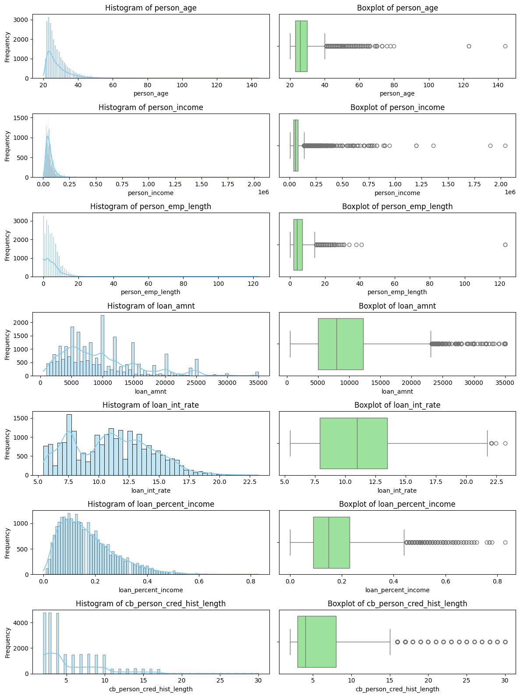
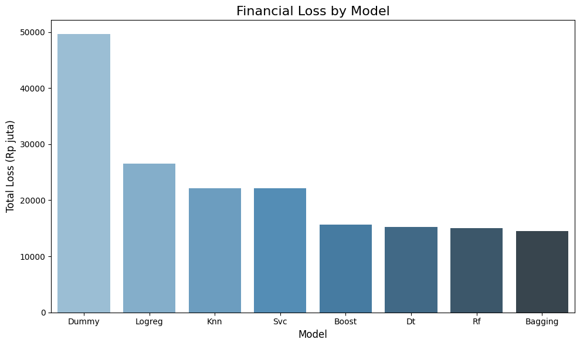

import pandas as pd
import numpy as npMentoring 3
Dataset Description
Dataset Link: https://www.kaggle.com/datasets/laotse/credit-risk-dataset
Dataset berisi data terkait peminjam uang. Data ini memiliki 12 variabel dengan loan_status sebagai variabel dependen (output) dan sisanya sebagai variabel independen (input).
Berikut adalah deskripsi mengenai arti dari setiap kolom pada data:
| Feature Name | Description |
|---|---|
| person_age | Age |
| person_income | Annual Income |
| person_home_ownership | Home ownership |
| person_emp_length | Employment length (in years) |
| loan_intent | Loan intent |
| loan_grade | Expected Risk Grade |
| loan_amnt | Loan amount |
| loan_int_rate | Interest rate |
| loan_status | 0 : non default, 1: default |
| loan_percent_income | Percent income |
| cb_person_default_on_file | Historical default |
| cb_preson_cred_hist_length | Credit history length |
Catatan: - Tidak terdapat keterangan mengenai mata uang yang digunakan pada person_income dan loan_amnt - loan_grade adalah klasifikasi ekspektasi risiko pemberian pinjaman, yaitu A sampai G untuk pinjaman dengan risiko default (gagal bayar) yang rendah hingga tinggi. (sumber:https://blog.groundfloor.com/groundfloorblog/about-loan-grading)
Modeling Workflow
Tujuan: Membuat model Classifier (default, non default) untuk meminimalkan potensi kerugian.
Task 1: Data Preparation
Load the Data
def read_data(fname):
filename = '/content/' + fname
# read csv as pandas dataframe
dataset = pd.read_csv(filename)
dataset['id'] = dataset.index
dataset.set_index('id', inplace = True)
print('Data shape raw : ', dataset.shape)
# drop duplicates
print('Number of duplicates : ', dataset.duplicated().sum())
dataset.drop_duplicates(keep = 'last', inplace = True)
# print data shape
print('Data shape after dropping : ', dataset.shape)
return datasetdf = read_data(fname= 'credit_risk_dataset.csv')Data shape raw : (32581, 12)
Number of duplicates : 165
Data shape after dropping : (32416, 12)df.head()| person_age | person_income | person_home_ownership | person_emp_length | loan_intent | loan_grade | loan_amnt | loan_int_rate | loan_status | loan_percent_income | cb_person_default_on_file | cb_person_cred_hist_length | |
|---|---|---|---|---|---|---|---|---|---|---|---|---|
| id | ||||||||||||
| 0 | 22 | 59000 | RENT | 123.0 | PERSONAL | D | 35000 | 16.02 | 1 | 0.59 | Y | 3 |
| 1 | 21 | 9600 | OWN | 5.0 | EDUCATION | B | 1000 | 11.14 | 0 | 0.10 | N | 2 |
| 2 | 25 | 9600 | MORTGAGE | 1.0 | MEDICAL | C | 5500 | 12.87 | 1 | 0.57 | N | 3 |
| 3 | 23 | 65500 | RENT | 4.0 | MEDICAL | C | 35000 | 15.23 | 1 | 0.53 | N | 2 |
| 4 | 24 | 54400 | RENT | 8.0 | MEDICAL | C | 35000 | 14.27 | 1 | 0.55 | Y | 4 |
Data Splitting
from sklearn.model_selection import train_test_split# Splitting the input and output columns
def split_input_output(data, target_col):
X = data.drop((target_col), axis = 1)
y = data[target_col]
print("X shape: " +str(X.shape))
print("y shape: " + str(y.shape))
return X, yX, y = split_input_output(data=df,
target_col='loan_status')X shape: (32416, 11)
y shape: (32416,)X.head()| person_age | person_income | person_home_ownership | person_emp_length | loan_intent | loan_grade | loan_amnt | loan_int_rate | loan_percent_income | cb_person_default_on_file | cb_person_cred_hist_length | |
|---|---|---|---|---|---|---|---|---|---|---|---|
| id | |||||||||||
| 0 | 22 | 59000 | RENT | 123.0 | PERSONAL | D | 35000 | 16.02 | 0.59 | Y | 3 |
| 1 | 21 | 9600 | OWN | 5.0 | EDUCATION | B | 1000 | 11.14 | 0.10 | N | 2 |
| 2 | 25 | 9600 | MORTGAGE | 1.0 | MEDICAL | C | 5500 | 12.87 | 0.57 | N | 3 |
| 3 | 23 | 65500 | RENT | 4.0 | MEDICAL | C | 35000 | 15.23 | 0.53 | N | 2 |
| 4 | 24 | 54400 | RENT | 8.0 | MEDICAL | C | 35000 | 14.27 | 0.55 | Y | 4 |
y.head()| loan_status | |
|---|---|
| id | |
| 0 | 1 |
| 1 | 0 |
| 2 | 1 |
| 3 | 1 |
| 4 | 1 |
y.value_counts(normalize = True)| proportion | |
|---|---|
| loan_status | |
| 0 | 0.781312 |
| 1 | 0.218688 |
Variabel y memiliki kelas yang imbalance sehingga perlu dilakukan stratified splitting pada train-test split.
# Train test split
def split_train_test(X,y, test_size = 0.2, seed = 123):
X_train, X_test, y_train, y_test = train_test_split(X, y, test_size = test_size, stratify = y, random_state=seed)
print("X train shape : ", X_train.shape)
print("y train shape : ", y_train.shape)
print("X test shape : ", X_test.shape)
print("y test shape : ", y_test.shape)
print("\n")
return X_train, X_test, y_train, y_test# Training set
X_train, X_test, y_train, y_test = split_train_test(X,y)X train shape : (25932, 11)
y train shape : (25932,)
X test shape : (6484, 11)
y test shape : (6484,)
print(len(X_train)/len(X))
print(len(X_test)/len(X))0.7999753208292202
0.20002467917077987# Memastikan data test dan train memiliki proporsi kelas yang sama
print(y_train.value_counts(normalize= True))
print(y_test.value_counts(normalize= True))loan_status
0 0.781313
1 0.218687
Name: proportion, dtype: float64
loan_status
0 0.781308
1 0.218692
Name: proportion, dtype: float64EDA
import matplotlib.pyplot as plt
import seaborn as snsX_train.info()<class 'pandas.core.frame.DataFrame'>
Index: 25932 entries, 30 to 21613
Data columns (total 11 columns):
# Column Non-Null Count Dtype
--- ------ -------------- -----
0 person_age 25932 non-null int64
1 person_income 25932 non-null int64
2 person_home_ownership 25932 non-null object
3 person_emp_length 25219 non-null float64
4 loan_intent 25932 non-null object
5 loan_grade 25932 non-null object
6 loan_amnt 25932 non-null int64
7 loan_int_rate 23433 non-null float64
8 loan_percent_income 25932 non-null float64
9 cb_person_default_on_file 25932 non-null object
10 cb_person_cred_hist_length 25932 non-null int64
dtypes: float64(3), int64(4), object(4)
memory usage: 2.4+ MBKeterangan: - Kolom person_home_ownership, loan_intent, loan_grade, dan cb_person_default_on_file bertipe kategorik. - Terdapat missing value pada person_emp_length(numerik) dan loan_int_rate (numerik)
X_train.isna().sum()| 0 | |
|---|---|
| person_age | 0 |
| person_income | 0 |
| person_home_ownership | 0 |
| person_emp_length | 713 |
| loan_intent | 0 |
| loan_grade | 0 |
| loan_amnt | 0 |
| loan_int_rate | 2499 |
| loan_percent_income | 0 |
| cb_person_default_on_file | 0 |
| cb_person_cred_hist_length | 0 |
# Lakukan splitting Variabel x numerik dengan kategorik
def split_num_cat(data, num_cols, cat_cols):
data_num = data[num_cols]
data_cat = data[cat_cols]
print("Numeric Data shape: "+ str(data_num.shape))
print("Categoric Data shape: "+ str(data_cat.shape))
return data_num, data_catnum_columns = ['person_age', 'person_income', 'person_emp_length',
'loan_amnt', 'loan_int_rate', 'loan_percent_income',
'cb_person_cred_hist_length' ]
cat_columns = ['person_home_ownership', 'loan_intent', 'loan_grade', 'cb_person_default_on_file']
X_train_num, X_train_cat = split_num_cat(X_train, num_columns, cat_columns)Numeric Data shape: (25932, 7)
Categoric Data shape: (25932, 4)Statistik Deskriptif Data Numerik
X_train_num.describe().T| count | mean | std | min | 25% | 50% | 75% | max | |
|---|---|---|---|---|---|---|---|---|
| person_age | 25932.0 | 27.721734 | 6.290102 | 20.00 | 23.00 | 26.00 | 30.00 | 144.00 |
| person_income | 25932.0 | 65694.299090 | 51863.661672 | 4000.00 | 38400.00 | 55000.00 | 79000.00 | 2039784.00 |
| person_emp_length | 25219.0 | 4.789405 | 4.164592 | 0.00 | 2.00 | 4.00 | 7.00 | 123.00 |
| loan_amnt | 25932.0 | 9586.400008 | 6316.672920 | 500.00 | 5000.00 | 8000.00 | 12250.00 | 35000.00 |
| loan_int_rate | 23433.0 | 11.013494 | 3.238078 | 5.42 | 7.90 | 10.99 | 13.47 | 23.22 |
| loan_percent_income | 25932.0 | 0.170452 | 0.106667 | 0.00 | 0.09 | 0.15 | 0.23 | 0.83 |
| cb_person_cred_hist_length | 25932.0 | 5.791108 | 4.041546 | 2.00 | 3.00 | 4.00 | 8.00 | 30.00 |
Keterangan: - Terdapat indikasi outlier pada kolom person_age, person_income, dan person_emp_length. - Kolom numerik memiliki distribusi nilai yang sangat berbeda satu sama lain.
# Membuat subplot
fig, axes = plt.subplots(len(num_columns), 2, figsize=(12, 16))
# Membuat plot untuk setiap kolom numerik
for i, column in enumerate(num_columns):
# Histogram dengan KDE
sns.histplot(X_train_num[column], kde=True, ax=axes[i, 0], color='skyblue')
axes[i, 0].set_title(f'Histogram of {column}')
axes[i, 0].set_xlabel(column)
axes[i, 0].set_ylabel('Frequency')
# Boxplot
sns.boxplot(x=X_train_num[column], ax=axes[i, 1], color='lightgreen')
axes[i, 1].set_title(f'Boxplot of {column}')
axes[i, 1].set_xlabel(column)
plt.tight_layout()
plt.show()
person_age, person_income, dan person_emp_length memiliki anomali
Pemeriksaan Anomali Data Numerik
X_train_num[X_train_num['person_age']> 100]| person_age | person_income | person_emp_length | loan_amnt | loan_int_rate | loan_percent_income | cb_person_cred_hist_length | |
|---|---|---|---|---|---|---|---|
| id | |||||||
| 81 | 144 | 250000 | 4.0 | 4800 | 13.57 | 0.02 | 3 |
| 747 | 123 | 78000 | 7.0 | 20000 | NaN | 0.26 | 4 |
| 575 | 123 | 80004 | 2.0 | 20400 | 10.25 | 0.25 | 3 |
X_train_num[ X_train_num['person_income'] >= 1_000_000]| person_age | person_income | person_emp_length | loan_amnt | loan_int_rate | loan_percent_income | cb_person_cred_hist_length | |
|---|---|---|---|---|---|---|---|
| id | |||||||
| 32546 | 60 | 1900000 | 5.0 | 1500 | NaN | 0.00 | 21 |
| 31922 | 47 | 1362000 | 9.0 | 6600 | 7.74 | 0.00 | 17 |
| 29119 | 36 | 1200000 | 16.0 | 10000 | 6.54 | 0.01 | 11 |
| 30049 | 42 | 2039784 | 0.0 | 8450 | 12.29 | 0.00 | 15 |
| 17833 | 32 | 1200000 | 1.0 | 12000 | 7.51 | 0.01 | 8 |
X_train_num[X_train_num['person_emp_length'] > 60]| person_age | person_income | person_emp_length | loan_amnt | loan_int_rate | loan_percent_income | cb_person_cred_hist_length | |
|---|---|---|---|---|---|---|---|
| id | |||||||
| 0 | 22 | 59000 | 123.0 | 35000 | 16.02 | 0.59 | 3 |
| 210 | 21 | 192000 | 123.0 | 20000 | 6.54 | 0.10 | 4 |
X_train_num[X_train_num['person_emp_length'] == 0]| person_age | person_income | person_emp_length | loan_amnt | loan_int_rate | loan_percent_income | cb_person_cred_hist_length | |
|---|---|---|---|---|---|---|---|
| id | |||||||
| 32528 | 65 | 120000 | 0.0 | 12000 | 11.48 | 0.10 | 21 |
| 1657 | 24 | 14400 | 0.0 | 1600 | 18.25 | 0.11 | 3 |
| 9934 | 24 | 65000 | 0.0 | 8000 | 10.99 | 0.12 | 3 |
| 18352 | 29 | 58000 | 0.0 | 20000 | 9.91 | 0.34 | 10 |
| 3441 | 26 | 45000 | 0.0 | 10800 | 6.17 | 0.24 | 3 |
| ... | ... | ... | ... | ... | ... | ... | ... |
| 7958 | 22 | 54000 | 0.0 | 7000 | 13.61 | 0.13 | 4 |
| 2102 | 24 | 28800 | 0.0 | 2400 | 14.26 | 0.08 | 4 |
| 9267 | 22 | 60400 | 0.0 | 24000 | 6.54 | 0.40 | 3 |
| 6117 | 22 | 48000 | 0.0 | 3500 | 6.54 | 0.07 | 3 |
| 4656 | 22 | 72000 | 0.0 | 9975 | 10.99 | 0.14 | 3 |
3279 rows × 7 columns
X_train_num[X_train_num['person_emp_length'] == 0].shape(3279, 7)Cukup banyak baris yang memiliki kolom person_emp_length = 0, saya akan berasumsi bahwa hal ini berarti objek observasi tidak pernah bekerja untuk orang lain tetapi memiliki penghasilan misalnya pengusaha dan bukanlah sebuah anomali pada data.
X_train_num[X_train_num['loan_percent_income'] == 0]| person_age | person_income | person_emp_length | loan_amnt | loan_int_rate | loan_percent_income | cb_person_cred_hist_length | |
|---|---|---|---|---|---|---|---|
| id | |||||||
| 17834 | 34 | 948000 | 18.0 | 2000 | 9.99 | 0.0 | 7 |
| 32546 | 60 | 1900000 | 5.0 | 1500 | NaN | 0.0 | 21 |
| 31916 | 43 | 780000 | 2.0 | 1000 | 8.94 | 0.0 | 11 |
| 31922 | 47 | 1362000 | 9.0 | 6600 | 7.74 | 0.0 | 17 |
| 30049 | 42 | 2039784 | 0.0 | 8450 | 12.29 | 0.0 | 15 |
Pengecekan Data Kategorik
X_train_cat['person_home_ownership'].value_counts()| count | |
|---|---|
| person_home_ownership | |
| RENT | 13159 |
| MORTGAGE | 10655 |
| OWN | 2033 |
| OTHER | 85 |
X_train_cat['loan_intent'].value_counts()| count | |
|---|---|
| loan_intent | |
| EDUCATION | 5141 |
| MEDICAL | 4794 |
| VENTURE | 4561 |
| PERSONAL | 4407 |
| DEBTCONSOLIDATION | 4169 |
| HOMEIMPROVEMENT | 2860 |
X_train_cat['loan_grade'].value_counts()| count | |
|---|---|
| loan_grade | |
| A | 8562 |
| B | 8338 |
| C | 5135 |
| D | 2881 |
| E | 759 |
| F | 206 |
| G | 51 |
X_train_cat['cb_person_default_on_file'].value_counts()| count | |
|---|---|
| cb_person_default_on_file | |
| N | 21374 |
| Y | 4558 |
Kolom cb_person_default_on_file perlu diubah menjadi boolean
Data Preprocessing Plan:
- Hapus data anomali pada kolom numerik.
- Handle missing value pada
person_emp_lengthdanloan_int_ratedengan imputasi nilai median - Lakukan Standarisasi pada kolom numerik.
- Ubah
cb_person_default_on_filemenjadi boolean - Lakukan ordinal encoding pada kolom
loan_grade - lakukan one hot encoding pada
person_home_ownershipdanloan_intent
Data Preprocessing
from sklearn.impute import SimpleImputer
from sklearn.preprocessing import StandardScaler
from sklearn.preprocessing import OneHotEncoder
from sklearn.preprocessing import OrdinalEncoderPenanganan Anomali pada Data
age_anomaly = X_train_num[X_train_num['person_age']> 100].index.tolist()
income_anomaly = X_train_num[X_train_num['person_income'] >= 1_000_000].index.tolist()
emp_length_anomaly = X_train_num[X_train_num['person_emp_length'] > 60].index.tolist()
idx_to_drop = set(emp_length_anomaly + income_anomaly + age_anomaly)print(f'Number of index to drop:', len(idx_to_drop))
idx_to_dropNumber of index to drop: 10{0, 81, 210, 575, 747, 17833, 29119, 30049, 31922, 32546}X_train_num_dropped = X_train_num.drop(index = idx_to_drop)
y_train_dropped = y_train.drop(index = idx_to_drop)print('Shape of X train after dropped:', X_train_num_dropped.shape)
X_train_num_dropped.head()Shape of X train after dropped: (25922, 7)| person_age | person_income | person_emp_length | loan_amnt | loan_int_rate | loan_percent_income | cb_person_cred_hist_length | |
|---|---|---|---|---|---|---|---|
| id | |||||||
| 30 | 21 | 11520 | 5.0 | 2000 | 11.12 | 0.17 | 3 |
| 25221 | 28 | 81120 | 5.0 | 5200 | 11.49 | 0.06 | 7 |
| 32528 | 65 | 120000 | 0.0 | 12000 | 11.48 | 0.10 | 21 |
| 9322 | 26 | 62000 | 7.0 | 8000 | 12.99 | 0.13 | 4 |
| 7010 | 26 | 51000 | 2.0 | 4000 | 5.99 | 0.08 | 4 |
Penanganan Missing Value
def num_imputer_fit(data):
imputer = SimpleImputer(missing_values = np.nan, strategy = 'median')
imputer.fit(data)
return imputer
def num_imputer_transform(data, imputer):
imputer.set_output(transform = "pandas")
data = imputer.transform(data)
return data# Get the numerical imputer
num_imputer = num_imputer_fit(X_train_num_dropped)
# Transform the data
X_train_imputed = num_imputer_transform(X_train_num_dropped, num_imputer)# Validasi hasil
X_train_imputed.isna().sum()| 0 | |
|---|---|
| person_age | 0 |
| person_income | 0 |
| person_emp_length | 0 |
| loan_amnt | 0 |
| loan_int_rate | 0 |
| loan_percent_income | 0 |
| cb_person_cred_hist_length | 0 |
Standardisasi
def fit_scaler(data):
scaler = StandardScaler()
scaler.fit(data)
return scaler
def transform_scaler(data, scaler):
scaler.set_output(transform = 'pandas')
data = scaler.transform(data)
return datascaler = fit_scaler(X_train_imputed)
X_train_num_scaled = transform_scaler(X_train_imputed, scaler)X_train_num_scaled.head()| person_age | person_income | person_emp_length | loan_amnt | loan_int_rate | loan_percent_income | cb_person_cred_hist_length | |
|---|---|---|---|---|---|---|---|
| id | |||||||
| 30 | -1.083974 | -1.137217 | 0.060787 | -1.201171 | 0.035241 | -0.004407 | -0.690598 |
| 25221 | 0.047295 | 0.331873 | 0.060787 | -0.694398 | 0.155448 | -1.036096 | 0.299539 |
| 32528 | 6.026857 | 1.152537 | -1.196967 | 0.382496 | 0.152199 | -0.660936 | 3.765020 |
| 9322 | -0.275925 | -0.071705 | 0.563888 | -0.250971 | 0.642772 | -0.379567 | -0.443064 |
| 7010 | -0.275925 | -0.303889 | -0.693865 | -0.884438 | -1.631408 | -0.848516 | -0.443064 |
# Validasi hasil
X_train_num_scaled.describe().round(4)| person_age | person_income | person_emp_length | loan_amnt | loan_int_rate | loan_percent_income | cb_person_cred_hist_length | |
|---|---|---|---|---|---|---|---|
| count | 25922.0000 | 25922.0000 | 25922.0000 | 25922.0000 | 25922.0000 | 25922.0000 | 25922.0000 |
| mean | -0.0000 | 0.0000 | -0.0000 | 0.0000 | 0.0000 | -0.0000 | -0.0000 |
| std | 1.0000 | 1.0000 | 1.0000 | 1.0000 | 1.0000 | 1.0000 | 1.0000 |
| min | -1.2456 | -1.2959 | -1.1970 | -1.4387 | -1.8166 | -1.5988 | -0.9381 |
| 25% | -0.7608 | -0.5698 | -0.6939 | -0.7261 | -0.8192 | -0.7547 | -0.6906 |
| 50% | -0.2759 | -0.2195 | -0.1908 | -0.2510 | -0.0070 | -0.1920 | -0.4431 |
| 75% | 0.3705 | 0.2871 | 0.5639 | 0.4221 | 0.6818 | 0.5583 | 0.5471 |
| max | 8.4510 | 18.6296 | 9.1166 | 4.0249 | 3.9663 | 6.1857 | 5.9928 |
Penanganan Inkonsistensi Format Data Kategorik
X_train_cat.loc[:,'cb_person_default_on_file'] = (X_train_cat['cb_person_default_on_file'].replace({'N' : 0, 'Y' : 1 }).astype(int))FutureWarning: Downcasting behavior in `replace` is deprecated and will be removed in a future version. To retain the old behavior, explicitly call `result.infer_objects(copy=False)`. To opt-in to the future behavior, set `pd.set_option('future.no_silent_downcasting', True)`
X_train_cat.loc[:,'cb_person_default_on_file'] = (X_train_cat['cb_person_default_on_file'].replace({'N' : 0, 'Y' : 1 }).astype(int))X_train_cat.head()| person_home_ownership | loan_intent | loan_grade | cb_person_default_on_file | |
|---|---|---|---|---|
| id | ||||
| 30 | OWN | MEDICAL | B | 0 |
| 25221 | MORTGAGE | HOMEIMPROVEMENT | B | 0 |
| 32528 | MORTGAGE | PERSONAL | B | 0 |
| 9322 | RENT | PERSONAL | C | 0 |
| 7010 | MORTGAGE | MEDICAL | A | 0 |
Encoding Data Kategorik
def cat_OHencode_fit(data):
OHencoder = OneHotEncoder(sparse_output=False, handle_unknown = 'ignore')
OHencoder.fit(data[['person_home_ownership', 'loan_intent']])
return OHencoder
def cat_ORDencode_fit(data):
ORDencoder = OrdinalEncoder()
ORDencoder.fit(data[['loan_grade']])
return ORDencoder
def cat_encoder_transform(data, onehot_encoder, ordinal_encoder):
OHencoded_data = onehot_encoder.transform(data[['person_home_ownership', 'loan_intent']])
ORDencoded_data = ordinal_encoder.transform(data[['loan_grade']])
# simpan index 'id' sebagai kolom
df_reset = data.reset_index()
# Ubah data menjadi Dataframe
df_OHencoded = pd.DataFrame(OHencoded_data, columns= onehot_encoder.get_feature_names_out(['person_home_ownership', 'loan_intent']))
df_ORDencoded = pd.DataFrame(ORDencoded_data, columns=['loan_grade'])
# Gabungkan sesuai index
df_encoded_combined_indexed = pd.concat([df_reset.drop(columns=['person_home_ownership', 'loan_intent','loan_grade']),df_OHencoded, df_ORDencoded], axis=1)
result_df = df_encoded_combined_indexed.set_index('id')
return result_df# Perform categorical imputation
cat_OHencoder = cat_OHencode_fit(X_train_cat)
cat_ORDencoder = cat_ORDencode_fit(X_train_cat)
# Transform
X_train_cat_encoded = cat_encoder_transform(X_train_cat, cat_OHencoder, cat_ORDencoder)X_train_cat_encoded| cb_person_default_on_file | person_home_ownership_MORTGAGE | person_home_ownership_OTHER | person_home_ownership_OWN | person_home_ownership_RENT | loan_intent_DEBTCONSOLIDATION | loan_intent_EDUCATION | loan_intent_HOMEIMPROVEMENT | loan_intent_MEDICAL | loan_intent_PERSONAL | loan_intent_VENTURE | loan_grade | |
|---|---|---|---|---|---|---|---|---|---|---|---|---|
| id | ||||||||||||
| 30 | 0 | 0.0 | 0.0 | 1.0 | 0.0 | 0.0 | 0.0 | 0.0 | 1.0 | 0.0 | 0.0 | 1.0 |
| 25221 | 0 | 1.0 | 0.0 | 0.0 | 0.0 | 0.0 | 0.0 | 1.0 | 0.0 | 0.0 | 0.0 | 1.0 |
| 32528 | 0 | 1.0 | 0.0 | 0.0 | 0.0 | 0.0 | 0.0 | 0.0 | 0.0 | 1.0 | 0.0 | 1.0 |
| 9322 | 0 | 0.0 | 0.0 | 0.0 | 1.0 | 0.0 | 0.0 | 0.0 | 0.0 | 1.0 | 0.0 | 2.0 |
| 7010 | 0 | 1.0 | 0.0 | 0.0 | 0.0 | 0.0 | 0.0 | 0.0 | 1.0 | 0.0 | 0.0 | 0.0 |
| ... | ... | ... | ... | ... | ... | ... | ... | ... | ... | ... | ... | ... |
| 32519 | 0 | 1.0 | 0.0 | 0.0 | 0.0 | 0.0 | 0.0 | 0.0 | 0.0 | 1.0 | 0.0 | 0.0 |
| 27809 | 0 | 1.0 | 0.0 | 0.0 | 0.0 | 1.0 | 0.0 | 0.0 | 0.0 | 0.0 | 0.0 | 1.0 |
| 16801 | 0 | 1.0 | 0.0 | 0.0 | 0.0 | 0.0 | 0.0 | 0.0 | 0.0 | 0.0 | 1.0 | 0.0 |
| 95 | 0 | 0.0 | 0.0 | 0.0 | 1.0 | 0.0 | 1.0 | 0.0 | 0.0 | 0.0 | 0.0 | 1.0 |
| 21613 | 0 | 1.0 | 0.0 | 0.0 | 0.0 | 1.0 | 0.0 | 0.0 | 0.0 | 0.0 | 0.0 | 1.0 |
25932 rows × 12 columns
Penggabungan Data Numerik dan Kategorik
def concat_data(num_data, cat_data):
print('\nCleaned Numerical data shape: ' + str(num_data.shape))
print('Cleaned Categorical data shape: ' + str(cat_data.shape))
concated_data = num_data.join(cat_data, how = 'inner')
print('Concated data shape: ' + str(concated_data.shape))
return concated_dataX_train_concat = concat_data(X_train_num_scaled ,X_train_cat_encoded)
Cleaned Numerical data shape: (25922, 7)
Cleaned Categorical data shape: (25932, 12)
Concated data shape: (25922, 19)X_train_concat| person_age | person_income | person_emp_length | loan_amnt | loan_int_rate | loan_percent_income | cb_person_cred_hist_length | cb_person_default_on_file | person_home_ownership_MORTGAGE | person_home_ownership_OTHER | person_home_ownership_OWN | person_home_ownership_RENT | loan_intent_DEBTCONSOLIDATION | loan_intent_EDUCATION | loan_intent_HOMEIMPROVEMENT | loan_intent_MEDICAL | loan_intent_PERSONAL | loan_intent_VENTURE | loan_grade | |
|---|---|---|---|---|---|---|---|---|---|---|---|---|---|---|---|---|---|---|---|
| id | |||||||||||||||||||
| 30 | -1.083974 | -1.137217 | 0.060787 | -1.201171 | 0.035241 | -0.004407 | -0.690598 | 0 | 0.0 | 0.0 | 1.0 | 0.0 | 0.0 | 0.0 | 0.0 | 1.0 | 0.0 | 0.0 | 1.0 |
| 25221 | 0.047295 | 0.331873 | 0.060787 | -0.694398 | 0.155448 | -1.036096 | 0.299539 | 0 | 1.0 | 0.0 | 0.0 | 0.0 | 0.0 | 0.0 | 1.0 | 0.0 | 0.0 | 0.0 | 1.0 |
| 32528 | 6.026857 | 1.152537 | -1.196967 | 0.382496 | 0.152199 | -0.660936 | 3.765020 | 0 | 1.0 | 0.0 | 0.0 | 0.0 | 0.0 | 0.0 | 0.0 | 0.0 | 1.0 | 0.0 | 1.0 |
| 9322 | -0.275925 | -0.071705 | 0.563888 | -0.250971 | 0.642772 | -0.379567 | -0.443064 | 0 | 0.0 | 0.0 | 0.0 | 1.0 | 0.0 | 0.0 | 0.0 | 0.0 | 1.0 | 0.0 | 2.0 |
| 7010 | -0.275925 | -0.303889 | -0.693865 | -0.884438 | -1.631408 | -0.848516 | -0.443064 | 0 | 1.0 | 0.0 | 0.0 | 0.0 | 0.0 | 0.0 | 0.0 | 1.0 | 0.0 | 0.0 | 0.0 |
| ... | ... | ... | ... | ... | ... | ... | ... | ... | ... | ... | ... | ... | ... | ... | ... | ... | ... | ... | ... |
| 32519 | 3.764320 | 1.065996 | 2.827844 | 0.382496 | -1.017379 | -0.660936 | 5.745294 | 0 | 1.0 | 0.0 | 0.0 | 0.0 | 0.0 | 0.0 | 0.0 | 0.0 | 1.0 | 0.0 | 0.0 |
| 27809 | 0.047295 | 3.474375 | 1.821641 | 0.065762 | -0.019989 | -1.223676 | 0.052005 | 0 | 1.0 | 0.0 | 0.0 | 0.0 | 1.0 | 0.0 | 0.0 | 0.0 | 0.0 | 0.0 | 1.0 |
| 16801 | -0.760754 | -0.219458 | -0.190764 | -0.250971 | -1.144083 | -0.191987 | -0.938132 | 0 | 1.0 | 0.0 | 0.0 | 0.0 | 0.0 | 0.0 | 0.0 | 0.0 | 0.0 | 1.0 | 0.0 |
| 95 | -0.760754 | 1.152537 | -0.945416 | 2.536283 | 0.545307 | 0.370753 | -0.690598 | 0 | 0.0 | 0.0 | 0.0 | 1.0 | 0.0 | 1.0 | 0.0 | 0.0 | 0.0 | 0.0 | 1.0 |
| 21613 | 0.532124 | -0.335550 | -0.442315 | 0.065762 | -0.084965 | 0.276963 | 0.052005 | 0 | 1.0 | 0.0 | 0.0 | 0.0 | 1.0 | 0.0 | 0.0 | 0.0 | 0.0 | 0.0 | 1.0 |
25922 rows × 19 columns
Membuat Fungsi Preprocessing
def preprocess_data(data,num_cols, cat_cols, num_imputer, scaler, cat_onehot_encoder, cat_ordinal_encoder):
#Splitting Numerik dan kategorik
X_num, X_cat = split_num_cat(data, num_cols, cat_cols)
#Penanganan Missing Value
X_num_imputed = num_imputer_transform(X_num, num_imputer)
#Standardisasi
X_train_num_clean = transform_scaler(X_num_imputed, scaler)
#Penganganan Inkonsistensi
X_cat.loc[:,'cb_person_default_on_file'] = (X_cat['cb_person_default_on_file'].replace({'N' : 0, 'Y' : 1 }).astype(int))
#Encoding Data Kategorik
X_cat_encoded = cat_encoder_transform(X_cat, cat_onehot_encoder, cat_ordinal_encoder)
#Gabungkan Data
cleaned_data = concat_data(X_train_num_clean,X_cat_encoded)
return cleaned_dataTask 2: Modeling
from sklearn.metrics import confusion_matrix, classification_report
from sklearn.dummy import DummyClassifier
from sklearn.model_selection import GridSearchCV, RandomizedSearchCV
from sklearn.neighbors import KNeighborsClassifier
from sklearn.tree import DecisionTreeClassifier
from sklearn.linear_model import LogisticRegression
from sklearn.svm import SVC
from sklearn.ensemble import BaggingClassifier, RandomForestClassifier, AdaBoostClassifier
from scipy.stats import randint,uniform# Preprocessing Data Test
X_test_clean = preprocess_data(X_test,num_columns, cat_columns, num_imputer, scaler, cat_OHencoder, cat_ORDencoder)Numeric Data shape: (6484, 7)
Categoric Data shape: (6484, 4)
Cleaned Numerical data shape: (6484, 7)
Cleaned Categorical data shape: (6484, 12)
Concated data shape: (6484, 19)FutureWarning: Downcasting behavior in `replace` is deprecated and will be removed in a future version. To retain the old behavior, explicitly call `result.infer_objects(copy=False)`. To opt-in to the future behavior, set `pd.set_option('future.no_silent_downcasting', True)`
X_cat.loc[:,'cb_person_default_on_file'] = (X_cat['cb_person_default_on_file'].replace({'N' : 0, 'Y' : 1 }).astype(int))y_test.shape(6484,)Metrics
Untuk meminimalkan kejadian False Negative akan digunakan Recall sebagai evaluation metric utama.
Baseline Model
dummy_clf = dummy_clf = DummyClassifier(strategy = "most_frequent")
dummy_clf.fit(X = X_train_concat,
y = y_train_dropped)DummyClassifier(strategy='most_frequent')In a Jupyter environment, please rerun this cell to show the HTML representation or trust the notebook.
On GitHub, the HTML representation is unable to render, please try loading this page with nbviewer.org.
DummyClassifier(strategy='most_frequent')
y_pred_dummy = dummy_clf.predict(X_train_concat)
report_dummy_model = classification_report(y_train_dropped, y_pred_dummy)
print(report_dummy_model) precision recall f1-score support
0 0.78 1.00 0.88 20252
1 0.00 0.00 0.00 5670
accuracy 0.78 25922
macro avg 0.39 0.50 0.44 25922
weighted avg 0.61 0.78 0.69 25922
/usr/local/lib/python3.11/dist-packages/sklearn/metrics/_classification.py:1565: UndefinedMetricWarning: Precision is ill-defined and being set to 0.0 in labels with no predicted samples. Use `zero_division` parameter to control this behavior.
_warn_prf(average, modifier, f"{metric.capitalize()} is", len(result))
/usr/local/lib/python3.11/dist-packages/sklearn/metrics/_classification.py:1565: UndefinedMetricWarning: Precision is ill-defined and being set to 0.0 in labels with no predicted samples. Use `zero_division` parameter to control this behavior.
_warn_prf(average, modifier, f"{metric.capitalize()} is", len(result))
/usr/local/lib/python3.11/dist-packages/sklearn/metrics/_classification.py:1565: UndefinedMetricWarning: Precision is ill-defined and being set to 0.0 in labels with no predicted samples. Use `zero_division` parameter to control this behavior.
_warn_prf(average, modifier, f"{metric.capitalize()} is", len(result))Best Model Search
kNN Classifier Model
knn_clf = KNeighborsClassifier()
param_grid = {'n_neighbors': range(1, 21), 'metric': ['euclidean', 'manhattan']}
grid_search = GridSearchCV(knn_clf, param_grid, cv=5,scoring='recall')
grid_search.fit(X_train_concat, y_train_dropped)GridSearchCV(cv=5, estimator=KNeighborsClassifier(),
param_grid={'metric': ['euclidean', 'manhattan'],
'n_neighbors': range(1, 21)},
scoring='recall')In a Jupyter environment, please rerun this cell to show the HTML representation or trust the notebook. On GitHub, the HTML representation is unable to render, please try loading this page with nbviewer.org.
GridSearchCV(cv=5, estimator=KNeighborsClassifier(),
param_grid={'metric': ['euclidean', 'manhattan'],
'n_neighbors': range(1, 21)},
scoring='recall')KNeighborsClassifier(metric='manhattan', n_neighbors=1)
KNeighborsClassifier(metric='manhattan', n_neighbors=1)
print("Best Parameters:", grid_search.best_params_)
print("Mean cross-validated score of the best_estimator:", grid_search.best_score_)Best Parameters: {'metric': 'manhattan', 'n_neighbors': 1}
Mean cross-validated score of the best_estimator: 0.6421516754850087knn_best_model = grid_search.best_estimator_
y_pred_knn = knn_best_model.predict(X_test_clean)
report_knn_model = classification_report(y_test, y_pred_knn)
print(report_knn_model) precision recall f1-score support
0 0.90 0.92 0.91 5066
1 0.70 0.63 0.66 1418
accuracy 0.86 6484
macro avg 0.80 0.78 0.79 6484
weighted avg 0.86 0.86 0.86 6484
Decision Tree
#Decision Tree
dtree_clf = DecisionTreeClassifier(random_state = 42)
param_distributions = {
'max_depth': np.arange(1, 50),
'min_samples_split': np.arange(2, 20),
'min_samples_leaf': np.arange(1, 20),
'max_features': [None, 'sqrt', 'log2'],
'criterion': ['gini', 'entropy']
}
randomcv_dtree = RandomizedSearchCV(
estimator=dtree_clf,
param_distributions=param_distributions,
n_iter=50,
cv=5,
scoring = "recall",
random_state=42,
n_jobs=-1
)
randomcv_dtree.fit(X = X_train_concat,
y = y_train_dropped)RandomizedSearchCV(cv=5, estimator=DecisionTreeClassifier(random_state=42),
n_iter=50, n_jobs=-1,
param_distributions={'criterion': ['gini', 'entropy'],
'max_depth': array([ 1, 2, 3, 4, 5, 6, 7, 8, 9, 10, 11, 12, 13, 14, 15, 16, 17,
18, 19, 20, 21, 22, 23, 24, 25, 26, 27, 28, 29, 30, 31, 32, 33, 34,
35, 36, 37, 38, 39, 40, 41, 42, 43, 44, 45, 46, 47, 48, 49]),
'max_features': [None, 'sqrt', 'log2'],
'min_samples_leaf': array([ 1, 2, 3, 4, 5, 6, 7, 8, 9, 10, 11, 12, 13, 14, 15, 16, 17,
18, 19]),
'min_samples_split': array([ 2, 3, 4, 5, 6, 7, 8, 9, 10, 11, 12, 13, 14, 15, 16, 17, 18,
19])},
random_state=42, scoring='recall')In a Jupyter environment, please rerun this cell to show the HTML representation or trust the notebook. On GitHub, the HTML representation is unable to render, please try loading this page with nbviewer.org.
RandomizedSearchCV(cv=5, estimator=DecisionTreeClassifier(random_state=42),
n_iter=50, n_jobs=-1,
param_distributions={'criterion': ['gini', 'entropy'],
'max_depth': array([ 1, 2, 3, 4, 5, 6, 7, 8, 9, 10, 11, 12, 13, 14, 15, 16, 17,
18, 19, 20, 21, 22, 23, 24, 25, 26, 27, 28, 29, 30, 31, 32, 33, 34,
35, 36, 37, 38, 39, 40, 41, 42, 43, 44, 45, 46, 47, 48, 49]),
'max_features': [None, 'sqrt', 'log2'],
'min_samples_leaf': array([ 1, 2, 3, 4, 5, 6, 7, 8, 9, 10, 11, 12, 13, 14, 15, 16, 17,
18, 19]),
'min_samples_split': array([ 2, 3, 4, 5, 6, 7, 8, 9, 10, 11, 12, 13, 14, 15, 16, 17, 18,
19])},
random_state=42, scoring='recall')DecisionTreeClassifier(max_depth=26, min_samples_split=10, random_state=42)
DecisionTreeClassifier(max_depth=26, min_samples_split=10, random_state=42)
# Menampilkan Hasil Hyperparameter Terbaik
print("Best Parameters:", randomcv_dtree.best_params_)
print("Mean cross-validated score of the best_estimator:", randomcv_dtree.best_score_)Best Parameters: {'min_samples_split': 10, 'min_samples_leaf': 1, 'max_features': None, 'max_depth': 26, 'criterion': 'gini'}
Mean cross-validated score of the best_estimator: 0.7562610229276896DT_best_model = randomcv_dtree.best_estimator_
y_pred_DT = DT_best_model.predict(X_test_clean)
report_DT_model = classification_report(y_test, y_pred_DT)
print(report_DT_model) precision recall f1-score support
0 0.93 0.96 0.94 5066
1 0.83 0.74 0.78 1418
accuracy 0.91 6484
macro avg 0.88 0.85 0.86 6484
weighted avg 0.91 0.91 0.91 6484
Logistic Regresion
#Logistic Regression
logreg_clf = LogisticRegression()
param_grid = {'max_iter': [100, 500, 1000],
'penalty' : [ 'l1', 'l2',None],
'solver' : ['liblinear', 'saga'],
'C': [0.01, 0.1, 1, 10, 100]
}
gridcv_logreg = GridSearchCV(estimator= logreg_clf, param_grid=param_grid, cv=5, scoring='recall')
gridcv_logreg.fit(X = X_train_concat,
y = y_train_dropped)/usr/local/lib/python3.11/dist-packages/sklearn/linear_model/_logistic.py:1207: UserWarning: Setting penalty=None will ignore the C and l1_ratio parameters
warnings.warn(
/usr/local/lib/python3.11/dist-packages/sklearn/linear_model/_logistic.py:1207: UserWarning: Setting penalty=None will ignore the C and l1_ratio parameters
warnings.warn(
/usr/local/lib/python3.11/dist-packages/sklearn/linear_model/_logistic.py:1207: UserWarning: Setting penalty=None will ignore the C and l1_ratio parameters
warnings.warn(
/usr/local/lib/python3.11/dist-packages/sklearn/linear_model/_logistic.py:1207: UserWarning: Setting penalty=None will ignore the C and l1_ratio parameters
warnings.warn(
/usr/local/lib/python3.11/dist-packages/sklearn/linear_model/_logistic.py:1207: UserWarning: Setting penalty=None will ignore the C and l1_ratio parameters
warnings.warn(
/usr/local/lib/python3.11/dist-packages/sklearn/linear_model/_logistic.py:1207: UserWarning: Setting penalty=None will ignore the C and l1_ratio parameters
warnings.warn(
/usr/local/lib/python3.11/dist-packages/sklearn/linear_model/_logistic.py:1207: UserWarning: Setting penalty=None will ignore the C and l1_ratio parameters
warnings.warn(
/usr/local/lib/python3.11/dist-packages/sklearn/linear_model/_logistic.py:1207: UserWarning: Setting penalty=None will ignore the C and l1_ratio parameters
warnings.warn(
/usr/local/lib/python3.11/dist-packages/sklearn/linear_model/_logistic.py:1207: UserWarning: Setting penalty=None will ignore the C and l1_ratio parameters
warnings.warn(
/usr/local/lib/python3.11/dist-packages/sklearn/linear_model/_logistic.py:1207: UserWarning: Setting penalty=None will ignore the C and l1_ratio parameters
warnings.warn(
/usr/local/lib/python3.11/dist-packages/sklearn/linear_model/_logistic.py:1207: UserWarning: Setting penalty=None will ignore the C and l1_ratio parameters
warnings.warn(
/usr/local/lib/python3.11/dist-packages/sklearn/linear_model/_logistic.py:1207: UserWarning: Setting penalty=None will ignore the C and l1_ratio parameters
warnings.warn(
/usr/local/lib/python3.11/dist-packages/sklearn/linear_model/_logistic.py:1207: UserWarning: Setting penalty=None will ignore the C and l1_ratio parameters
warnings.warn(
/usr/local/lib/python3.11/dist-packages/sklearn/linear_model/_logistic.py:1207: UserWarning: Setting penalty=None will ignore the C and l1_ratio parameters
warnings.warn(
/usr/local/lib/python3.11/dist-packages/sklearn/linear_model/_logistic.py:1207: UserWarning: Setting penalty=None will ignore the C and l1_ratio parameters
warnings.warn(
/usr/local/lib/python3.11/dist-packages/sklearn/linear_model/_sag.py:348: ConvergenceWarning: The max_iter was reached which means the coef_ did not converge
warnings.warn(
/usr/local/lib/python3.11/dist-packages/sklearn/linear_model/_sag.py:348: ConvergenceWarning: The max_iter was reached which means the coef_ did not converge
warnings.warn(
/usr/local/lib/python3.11/dist-packages/sklearn/linear_model/_sag.py:348: ConvergenceWarning: The max_iter was reached which means the coef_ did not converge
warnings.warn(
/usr/local/lib/python3.11/dist-packages/sklearn/linear_model/_sag.py:348: ConvergenceWarning: The max_iter was reached which means the coef_ did not converge
warnings.warn(
/usr/local/lib/python3.11/dist-packages/sklearn/linear_model/_sag.py:348: ConvergenceWarning: The max_iter was reached which means the coef_ did not converge
warnings.warn(
/usr/local/lib/python3.11/dist-packages/sklearn/linear_model/_logistic.py:1207: UserWarning: Setting penalty=None will ignore the C and l1_ratio parameters
warnings.warn(
/usr/local/lib/python3.11/dist-packages/sklearn/linear_model/_logistic.py:1207: UserWarning: Setting penalty=None will ignore the C and l1_ratio parameters
warnings.warn(
/usr/local/lib/python3.11/dist-packages/sklearn/linear_model/_logistic.py:1207: UserWarning: Setting penalty=None will ignore the C and l1_ratio parameters
warnings.warn(
/usr/local/lib/python3.11/dist-packages/sklearn/linear_model/_logistic.py:1207: UserWarning: Setting penalty=None will ignore the C and l1_ratio parameters
warnings.warn(
/usr/local/lib/python3.11/dist-packages/sklearn/linear_model/_logistic.py:1207: UserWarning: Setting penalty=None will ignore the C and l1_ratio parameters
warnings.warn(
/usr/local/lib/python3.11/dist-packages/sklearn/linear_model/_logistic.py:1207: UserWarning: Setting penalty=None will ignore the C and l1_ratio parameters
warnings.warn(
/usr/local/lib/python3.11/dist-packages/sklearn/linear_model/_logistic.py:1207: UserWarning: Setting penalty=None will ignore the C and l1_ratio parameters
warnings.warn(
/usr/local/lib/python3.11/dist-packages/sklearn/linear_model/_logistic.py:1207: UserWarning: Setting penalty=None will ignore the C and l1_ratio parameters
warnings.warn(
/usr/local/lib/python3.11/dist-packages/sklearn/linear_model/_logistic.py:1207: UserWarning: Setting penalty=None will ignore the C and l1_ratio parameters
warnings.warn(
/usr/local/lib/python3.11/dist-packages/sklearn/linear_model/_logistic.py:1207: UserWarning: Setting penalty=None will ignore the C and l1_ratio parameters
warnings.warn(
/usr/local/lib/python3.11/dist-packages/sklearn/linear_model/_logistic.py:1207: UserWarning: Setting penalty=None will ignore the C and l1_ratio parameters
warnings.warn(
/usr/local/lib/python3.11/dist-packages/sklearn/linear_model/_logistic.py:1207: UserWarning: Setting penalty=None will ignore the C and l1_ratio parameters
warnings.warn(
/usr/local/lib/python3.11/dist-packages/sklearn/linear_model/_logistic.py:1207: UserWarning: Setting penalty=None will ignore the C and l1_ratio parameters
warnings.warn(
/usr/local/lib/python3.11/dist-packages/sklearn/linear_model/_logistic.py:1207: UserWarning: Setting penalty=None will ignore the C and l1_ratio parameters
warnings.warn(
/usr/local/lib/python3.11/dist-packages/sklearn/linear_model/_logistic.py:1207: UserWarning: Setting penalty=None will ignore the C and l1_ratio parameters
warnings.warn(
/usr/local/lib/python3.11/dist-packages/sklearn/linear_model/_sag.py:348: ConvergenceWarning: The max_iter was reached which means the coef_ did not converge
warnings.warn(
/usr/local/lib/python3.11/dist-packages/sklearn/linear_model/_sag.py:348: ConvergenceWarning: The max_iter was reached which means the coef_ did not converge
warnings.warn(
/usr/local/lib/python3.11/dist-packages/sklearn/linear_model/_sag.py:348: ConvergenceWarning: The max_iter was reached which means the coef_ did not converge
warnings.warn(
/usr/local/lib/python3.11/dist-packages/sklearn/linear_model/_sag.py:348: ConvergenceWarning: The max_iter was reached which means the coef_ did not converge
warnings.warn(
/usr/local/lib/python3.11/dist-packages/sklearn/linear_model/_sag.py:348: ConvergenceWarning: The max_iter was reached which means the coef_ did not converge
warnings.warn(
/usr/local/lib/python3.11/dist-packages/sklearn/linear_model/_sag.py:348: ConvergenceWarning: The max_iter was reached which means the coef_ did not converge
warnings.warn(
/usr/local/lib/python3.11/dist-packages/sklearn/linear_model/_sag.py:348: ConvergenceWarning: The max_iter was reached which means the coef_ did not converge
warnings.warn(
/usr/local/lib/python3.11/dist-packages/sklearn/linear_model/_sag.py:348: ConvergenceWarning: The max_iter was reached which means the coef_ did not converge
warnings.warn(
/usr/local/lib/python3.11/dist-packages/sklearn/linear_model/_sag.py:348: ConvergenceWarning: The max_iter was reached which means the coef_ did not converge
warnings.warn(
/usr/local/lib/python3.11/dist-packages/sklearn/linear_model/_sag.py:348: ConvergenceWarning: The max_iter was reached which means the coef_ did not converge
warnings.warn(
/usr/local/lib/python3.11/dist-packages/sklearn/linear_model/_sag.py:348: ConvergenceWarning: The max_iter was reached which means the coef_ did not converge
warnings.warn(
/usr/local/lib/python3.11/dist-packages/sklearn/linear_model/_sag.py:348: ConvergenceWarning: The max_iter was reached which means the coef_ did not converge
warnings.warn(
/usr/local/lib/python3.11/dist-packages/sklearn/linear_model/_sag.py:348: ConvergenceWarning: The max_iter was reached which means the coef_ did not converge
warnings.warn(
/usr/local/lib/python3.11/dist-packages/sklearn/linear_model/_sag.py:348: ConvergenceWarning: The max_iter was reached which means the coef_ did not converge
warnings.warn(
/usr/local/lib/python3.11/dist-packages/sklearn/linear_model/_sag.py:348: ConvergenceWarning: The max_iter was reached which means the coef_ did not converge
warnings.warn(
/usr/local/lib/python3.11/dist-packages/sklearn/linear_model/_sag.py:348: ConvergenceWarning: The max_iter was reached which means the coef_ did not converge
warnings.warn(
/usr/local/lib/python3.11/dist-packages/sklearn/linear_model/_sag.py:348: ConvergenceWarning: The max_iter was reached which means the coef_ did not converge
warnings.warn(
/usr/local/lib/python3.11/dist-packages/sklearn/linear_model/_sag.py:348: ConvergenceWarning: The max_iter was reached which means the coef_ did not converge
warnings.warn(
/usr/local/lib/python3.11/dist-packages/sklearn/linear_model/_sag.py:348: ConvergenceWarning: The max_iter was reached which means the coef_ did not converge
warnings.warn(
/usr/local/lib/python3.11/dist-packages/sklearn/linear_model/_sag.py:348: ConvergenceWarning: The max_iter was reached which means the coef_ did not converge
warnings.warn(
/usr/local/lib/python3.11/dist-packages/sklearn/linear_model/_logistic.py:1207: UserWarning: Setting penalty=None will ignore the C and l1_ratio parameters
warnings.warn(
/usr/local/lib/python3.11/dist-packages/sklearn/linear_model/_logistic.py:1207: UserWarning: Setting penalty=None will ignore the C and l1_ratio parameters
warnings.warn(
/usr/local/lib/python3.11/dist-packages/sklearn/linear_model/_logistic.py:1207: UserWarning: Setting penalty=None will ignore the C and l1_ratio parameters
warnings.warn(
/usr/local/lib/python3.11/dist-packages/sklearn/linear_model/_logistic.py:1207: UserWarning: Setting penalty=None will ignore the C and l1_ratio parameters
warnings.warn(
/usr/local/lib/python3.11/dist-packages/sklearn/linear_model/_logistic.py:1207: UserWarning: Setting penalty=None will ignore the C and l1_ratio parameters
warnings.warn(
/usr/local/lib/python3.11/dist-packages/sklearn/linear_model/_logistic.py:1207: UserWarning: Setting penalty=None will ignore the C and l1_ratio parameters
warnings.warn(
/usr/local/lib/python3.11/dist-packages/sklearn/linear_model/_logistic.py:1207: UserWarning: Setting penalty=None will ignore the C and l1_ratio parameters
warnings.warn(
/usr/local/lib/python3.11/dist-packages/sklearn/linear_model/_logistic.py:1207: UserWarning: Setting penalty=None will ignore the C and l1_ratio parameters
warnings.warn(
/usr/local/lib/python3.11/dist-packages/sklearn/linear_model/_logistic.py:1207: UserWarning: Setting penalty=None will ignore the C and l1_ratio parameters
warnings.warn(
/usr/local/lib/python3.11/dist-packages/sklearn/linear_model/_logistic.py:1207: UserWarning: Setting penalty=None will ignore the C and l1_ratio parameters
warnings.warn(
/usr/local/lib/python3.11/dist-packages/sklearn/linear_model/_logistic.py:1207: UserWarning: Setting penalty=None will ignore the C and l1_ratio parameters
warnings.warn(
/usr/local/lib/python3.11/dist-packages/sklearn/linear_model/_logistic.py:1207: UserWarning: Setting penalty=None will ignore the C and l1_ratio parameters
warnings.warn(
/usr/local/lib/python3.11/dist-packages/sklearn/linear_model/_logistic.py:1207: UserWarning: Setting penalty=None will ignore the C and l1_ratio parameters
warnings.warn(
/usr/local/lib/python3.11/dist-packages/sklearn/linear_model/_logistic.py:1207: UserWarning: Setting penalty=None will ignore the C and l1_ratio parameters
warnings.warn(
/usr/local/lib/python3.11/dist-packages/sklearn/linear_model/_logistic.py:1207: UserWarning: Setting penalty=None will ignore the C and l1_ratio parameters
warnings.warn(
/usr/local/lib/python3.11/dist-packages/sklearn/linear_model/_logistic.py:1207: UserWarning: Setting penalty=None will ignore the C and l1_ratio parameters
warnings.warn(
/usr/local/lib/python3.11/dist-packages/sklearn/linear_model/_logistic.py:1207: UserWarning: Setting penalty=None will ignore the C and l1_ratio parameters
warnings.warn(
/usr/local/lib/python3.11/dist-packages/sklearn/linear_model/_logistic.py:1207: UserWarning: Setting penalty=None will ignore the C and l1_ratio parameters
warnings.warn(
/usr/local/lib/python3.11/dist-packages/sklearn/linear_model/_logistic.py:1207: UserWarning: Setting penalty=None will ignore the C and l1_ratio parameters
warnings.warn(
/usr/local/lib/python3.11/dist-packages/sklearn/linear_model/_logistic.py:1207: UserWarning: Setting penalty=None will ignore the C and l1_ratio parameters
warnings.warn(
/usr/local/lib/python3.11/dist-packages/sklearn/linear_model/_logistic.py:1207: UserWarning: Setting penalty=None will ignore the C and l1_ratio parameters
warnings.warn(
/usr/local/lib/python3.11/dist-packages/sklearn/linear_model/_logistic.py:1207: UserWarning: Setting penalty=None will ignore the C and l1_ratio parameters
warnings.warn(
/usr/local/lib/python3.11/dist-packages/sklearn/linear_model/_logistic.py:1207: UserWarning: Setting penalty=None will ignore the C and l1_ratio parameters
warnings.warn(
/usr/local/lib/python3.11/dist-packages/sklearn/linear_model/_logistic.py:1207: UserWarning: Setting penalty=None will ignore the C and l1_ratio parameters
warnings.warn(
/usr/local/lib/python3.11/dist-packages/sklearn/linear_model/_logistic.py:1207: UserWarning: Setting penalty=None will ignore the C and l1_ratio parameters
warnings.warn(
/usr/local/lib/python3.11/dist-packages/sklearn/linear_model/_logistic.py:1207: UserWarning: Setting penalty=None will ignore the C and l1_ratio parameters
warnings.warn(
/usr/local/lib/python3.11/dist-packages/sklearn/linear_model/_logistic.py:1207: UserWarning: Setting penalty=None will ignore the C and l1_ratio parameters
warnings.warn(
/usr/local/lib/python3.11/dist-packages/sklearn/linear_model/_logistic.py:1207: UserWarning: Setting penalty=None will ignore the C and l1_ratio parameters
warnings.warn(
/usr/local/lib/python3.11/dist-packages/sklearn/linear_model/_logistic.py:1207: UserWarning: Setting penalty=None will ignore the C and l1_ratio parameters
warnings.warn(
/usr/local/lib/python3.11/dist-packages/sklearn/linear_model/_logistic.py:1207: UserWarning: Setting penalty=None will ignore the C and l1_ratio parameters
warnings.warn(
/usr/local/lib/python3.11/dist-packages/sklearn/model_selection/_validation.py:528: FitFailedWarning:
75 fits failed out of a total of 450.
The score on these train-test partitions for these parameters will be set to nan.
If these failures are not expected, you can try to debug them by setting error_score='raise'.
Below are more details about the failures:
--------------------------------------------------------------------------------
75 fits failed with the following error:
Traceback (most recent call last):
File "/usr/local/lib/python3.11/dist-packages/sklearn/model_selection/_validation.py", line 866, in _fit_and_score
estimator.fit(X_train, y_train, **fit_params)
File "/usr/local/lib/python3.11/dist-packages/sklearn/base.py", line 1389, in wrapper
return fit_method(estimator, *args, **kwargs)
^^^^^^^^^^^^^^^^^^^^^^^^^^^^^^^^^^^^^^
File "/usr/local/lib/python3.11/dist-packages/sklearn/linear_model/_logistic.py", line 1193, in fit
solver = _check_solver(self.solver, self.penalty, self.dual)
^^^^^^^^^^^^^^^^^^^^^^^^^^^^^^^^^^^^^^^^^^^^^^^^^^^
File "/usr/local/lib/python3.11/dist-packages/sklearn/linear_model/_logistic.py", line 76, in _check_solver
raise ValueError("penalty=None is not supported for the liblinear solver")
ValueError: penalty=None is not supported for the liblinear solver
warnings.warn(some_fits_failed_message, FitFailedWarning)
/usr/local/lib/python3.11/dist-packages/sklearn/model_selection/_search.py:1107: UserWarning: One or more of the test scores are non-finite: [0.45837743 0.46525573 0.47813051 0.48201058 nan 0.50670194
0.45855379 0.46525573 0.47813051 0.48201058 nan 0.50670194
0.45855379 0.46525573 0.47813051 0.48201058 nan 0.50670194
0.5015873 0.50194004 0.5015873 0.5021164 nan 0.50670194
0.5015873 0.50194004 0.5015873 0.5021164 nan 0.50670194
0.5015873 0.50194004 0.5015873 0.5021164 nan 0.50670194
0.50617284 0.50599647 0.50617284 0.50599647 nan 0.50670194
0.50617284 0.50634921 0.50617284 0.50634921 nan 0.50670194
0.50617284 0.50634921 0.50617284 0.50634921 nan 0.50670194
0.50652557 0.50652557 0.50652557 0.50652557 nan 0.50670194
0.50652557 0.50652557 0.50652557 0.50652557 nan 0.50670194
0.50652557 0.50652557 0.50652557 0.50652557 nan 0.50670194
0.50652557 0.50652557 0.50670194 0.50652557 nan 0.50670194
0.50652557 0.50652557 0.50670194 0.50652557 nan 0.50670194
0.50652557 0.50652557 0.50670194 0.50652557 nan 0.50670194]
warnings.warn(
/usr/local/lib/python3.11/dist-packages/sklearn/linear_model/_logistic.py:1207: UserWarning: Setting penalty=None will ignore the C and l1_ratio parameters
warnings.warn(GridSearchCV(cv=5, estimator=LogisticRegression(),
param_grid={'C': [0.01, 0.1, 1, 10, 100],
'max_iter': [100, 500, 1000],
'penalty': ['l1', 'l2', None],
'solver': ['liblinear', 'saga']},
scoring='recall')In a Jupyter environment, please rerun this cell to show the HTML representation or trust the notebook. On GitHub, the HTML representation is unable to render, please try loading this page with nbviewer.org.
GridSearchCV(cv=5, estimator=LogisticRegression(),
param_grid={'C': [0.01, 0.1, 1, 10, 100],
'max_iter': [100, 500, 1000],
'penalty': ['l1', 'l2', None],
'solver': ['liblinear', 'saga']},
scoring='recall')LogisticRegression(C=0.01, penalty=None, solver='saga')
LogisticRegression(C=0.01, penalty=None, solver='saga')
print("Best Parameters:", gridcv_logreg.best_params_)
print("Mean cross-validated score of the best_estimator:", gridcv_logreg.best_score_)Best Parameters: {'C': 0.01, 'max_iter': 100, 'penalty': None, 'solver': 'saga'}
Mean cross-validated score of the best_estimator: 0.5067019400352735logreg_best_model = gridcv_logreg.best_estimator_
y_pred_logreg = logreg_best_model.predict(X_test_clean)
report_logreg_model = classification_report(y_test, y_pred_logreg)
print(report_logreg_model) precision recall f1-score support
0 0.88 0.95 0.91 5066
1 0.74 0.52 0.61 1418
accuracy 0.85 6484
macro avg 0.81 0.73 0.76 6484
weighted avg 0.85 0.85 0.84 6484
Support Vector Classifier Model
svc = SVC()
param_grid = {
'C': [0.1, 1, 10, 100],
'kernel': ['linear', 'rbf', 'poly'],
'gamma': ['scale', 'auto'],
'degree': [2, 3, 4]
}
randomcv_svc = RandomizedSearchCV(
estimator=svc,
param_distributions=param_grid,
scoring='recall',
cv=5,
verbose=1,
n_jobs=-1
)
randomcv_svc.fit(X = X_train_concat,
y = y_train_dropped)Fitting 5 folds for each of 10 candidates, totalling 50 fitsRandomizedSearchCV(cv=5, estimator=SVC(), n_jobs=-1,
param_distributions={'C': [0.1, 1, 10, 100],
'degree': [2, 3, 4],
'gamma': ['scale', 'auto'],
'kernel': ['linear', 'rbf', 'poly']},
scoring='recall', verbose=1)In a Jupyter environment, please rerun this cell to show the HTML representation or trust the notebook. On GitHub, the HTML representation is unable to render, please try loading this page with nbviewer.org.
RandomizedSearchCV(cv=5, estimator=SVC(), n_jobs=-1,
param_distributions={'C': [0.1, 1, 10, 100],
'degree': [2, 3, 4],
'gamma': ['scale', 'auto'],
'kernel': ['linear', 'rbf', 'poly']},
scoring='recall', verbose=1)SVC(C=10, kernel='poly')
SVC(C=10, kernel='poly')
print("Best Parameters:", randomcv_svc.best_params_)
print("Mean cross-validated score of the best_estimator:", randomcv_svc.best_score_)Best Parameters: {'kernel': 'poly', 'gamma': 'scale', 'degree': 3, 'C': 10}
Mean cross-validated score of the best_estimator: 0.6520282186948854y_pred_svc = grid_search.best_estimator_.predict(X_test_clean)
print("\nClassification Report:\n", classification_report(y_test, y_pred_svc))
Classification Report:
precision recall f1-score support
0 0.90 0.92 0.91 5066
1 0.70 0.63 0.66 1418
accuracy 0.86 6484
macro avg 0.80 0.78 0.79 6484
weighted avg 0.86 0.86 0.86 6484
Bagging Decision Tree
tree = DecisionTreeClassifier(random_state=123)
bagging_model = BaggingClassifier(estimator= tree, random_state=123)
# Parameter grid
param_distributions = {
'n_estimators': randint(10, 100),
'max_samples': [0.5, 0.7, 1.0],
'max_features': [0.5, 0.7, 1.0],
'bootstrap': [True, False],
'bootstrap_features': [True, False],
'estimator__max_depth': randint(5, 30),
'estimator__min_samples_split': randint(2, 20),
}
# RandomizedSearchCV
random_search_bagging = RandomizedSearchCV(
estimator=bagging_model,
param_distributions=param_distributions,
n_iter=20,
cv=5,
scoring='recall',
n_jobs=-1,
random_state=123
)
random_search_bagging.fit(X = X_train_concat, y = y_train_dropped)RandomizedSearchCV(cv=5,
estimator=BaggingClassifier(estimator=DecisionTreeClassifier(random_state=123),
random_state=123),
n_iter=20, n_jobs=-1,
param_distributions={'bootstrap': [True, False],
'bootstrap_features': [True, False],
'estimator__max_depth': <scipy.stats._distn_infrastructure.rv_discrete_frozen object at 0x7ebeed9eae10>,
'estimator__min_samples_split': <scipy.stats._distn_infrastructure.rv_discrete_frozen object at 0x7ebeeda2e950>,
'max_features': [0.5, 0.7, 1.0],
'max_samples': [0.5, 0.7, 1.0],
'n_estimators': <scipy.stats._distn_infrastructure.rv_discrete_frozen object at 0x7ebeeda36390>},
random_state=123, scoring='recall')In a Jupyter environment, please rerun this cell to show the HTML representation or trust the notebook. On GitHub, the HTML representation is unable to render, please try loading this page with nbviewer.org.
RandomizedSearchCV(cv=5,
estimator=BaggingClassifier(estimator=DecisionTreeClassifier(random_state=123),
random_state=123),
n_iter=20, n_jobs=-1,
param_distributions={'bootstrap': [True, False],
'bootstrap_features': [True, False],
'estimator__max_depth': <scipy.stats._distn_infrastructure.rv_discrete_frozen object at 0x7ebeed9eae10>,
'estimator__min_samples_split': <scipy.stats._distn_infrastructure.rv_discrete_frozen object at 0x7ebeeda2e950>,
'max_features': [0.5, 0.7, 1.0],
'max_samples': [0.5, 0.7, 1.0],
'n_estimators': <scipy.stats._distn_infrastructure.rv_discrete_frozen object at 0x7ebeeda36390>},
random_state=123, scoring='recall')BaggingClassifier(bootstrap=False,
estimator=DecisionTreeClassifier(max_depth=24,
min_samples_split=8,
random_state=123),
max_features=0.7, n_estimators=93, random_state=123)DecisionTreeClassifier(max_depth=24, min_samples_split=8, random_state=123)
DecisionTreeClassifier(max_depth=24, min_samples_split=8, random_state=123)
print("Best Parameters:", random_search_bagging.best_params_)
print("Mean cross-validated score of the best_estimator:", random_search_bagging.best_score_)Best Parameters: {'bootstrap': False, 'bootstrap_features': False, 'estimator__max_depth': 24, 'estimator__min_samples_split': 8, 'max_features': 0.7, 'max_samples': 1.0, 'n_estimators': 93}
Mean cross-validated score of the best_estimator: 0.7331569664902998bagging_best_model = random_search_bagging.best_estimator_
y_pred_bagging = bagging_best_model.predict(X_test_clean)
report_bagging_model = classification_report(y_test, y_pred_bagging)
print(report_bagging_model) precision recall f1-score support
0 0.93 0.99 0.96 5066
1 0.96 0.71 0.82 1418
accuracy 0.93 6484
macro avg 0.95 0.85 0.89 6484
weighted avg 0.93 0.93 0.93 6484
Random Forest
rf_clf = RandomForestClassifier(random_state=42)
param_dist = {
'n_estimators': randint(50, 200), # Jumlah trees antara 50-200
'max_depth': [None, 10, 20, 30], # Kedalaman maksimal tree
'min_samples_split': randint(2, 10), # Minimal sampel untuk split
'min_samples_leaf': randint(1, 5), # Minimal sampel di leaf node
'criterion': ['gini', 'entropy'], # Fungsi untuk split
}
randomcv_rf = RandomizedSearchCV(rf_clf, param_distributions=param_dist, n_iter=20, cv=5, scoring='recall', random_state = 42)
randomcv_rf.fit(X_train_concat, y_train_dropped)RandomizedSearchCV(cv=5, estimator=RandomForestClassifier(random_state=42),
n_iter=20,
param_distributions={'criterion': ['gini', 'entropy'],
'max_depth': [None, 10, 20, 30],
'min_samples_leaf': <scipy.stats._distn_infrastructure.rv_discrete_frozen object at 0x7ebeed9ee550>,
'min_samples_split': <scipy.stats._distn_infrastructure.rv_discrete_frozen object at 0x7ebeeda33190>,
'n_estimators': <scipy.stats._distn_infrastructure.rv_discrete_frozen object at 0x7ebeed9b5490>},
random_state=42, scoring='recall')In a Jupyter environment, please rerun this cell to show the HTML representation or trust the notebook. On GitHub, the HTML representation is unable to render, please try loading this page with nbviewer.org.
RandomizedSearchCV(cv=5, estimator=RandomForestClassifier(random_state=42),
n_iter=20,
param_distributions={'criterion': ['gini', 'entropy'],
'max_depth': [None, 10, 20, 30],
'min_samples_leaf': <scipy.stats._distn_infrastructure.rv_discrete_frozen object at 0x7ebeed9ee550>,
'min_samples_split': <scipy.stats._distn_infrastructure.rv_discrete_frozen object at 0x7ebeeda33190>,
'n_estimators': <scipy.stats._distn_infrastructure.rv_discrete_frozen object at 0x7ebeed9b5490>},
random_state=42, scoring='recall')RandomForestClassifier(max_depth=30, min_samples_split=8, n_estimators=156,
random_state=42)RandomForestClassifier(max_depth=30, min_samples_split=8, n_estimators=156,
random_state=42)print("Best Parameters:", randomcv_rf.best_params_)
print("Best Cross-Validated recall:", randomcv_rf.best_score_)Best Parameters: {'criterion': 'gini', 'max_depth': 30, 'min_samples_leaf': 1, 'min_samples_split': 8, 'n_estimators': 156}
Best Cross-Validated recall: 0.718342151675485rf_best_model = randomcv_rf.best_estimator_
y_pred_rf = rf_best_model.predict(X_test_clean)
report_rf_model = classification_report(y_test, y_pred_rf)
print(report_rf_model) precision recall f1-score support
0 0.92 1.00 0.96 5066
1 0.98 0.70 0.82 1418
accuracy 0.93 6484
macro avg 0.95 0.85 0.89 6484
weighted avg 0.94 0.93 0.93 6484
Adaboost Model
tree = DecisionTreeClassifier(random_state=123)
adaboost_model = AdaBoostClassifier(estimator= tree, random_state=123)
param_distributions = {
'n_estimators': randint(50, 200),
'learning_rate': uniform(0.01, 1.0),
'estimator__max_depth': randint(1, 5),
'estimator__min_samples_split': randint(2, 20),
'estimator__min_samples_leaf': randint(1, 10),
}
random_search_adaboost = RandomizedSearchCV(
estimator=adaboost_model,
param_distributions=param_distributions,
n_iter=20,
cv=5,
scoring='recall',
n_jobs=-1,
random_state=123
)
random_search_adaboost.fit(X_train_concat, y_train_dropped)RandomizedSearchCV(cv=5,
estimator=AdaBoostClassifier(estimator=DecisionTreeClassifier(random_state=123),
random_state=123),
n_iter=20, n_jobs=-1,
param_distributions={'estimator__max_depth': <scipy.stats._distn_infrastructure.rv_discrete_frozen object at 0x7ebeed07a290>,
'estimator__min_samples_leaf': <scipy.stats._distn_infrastructure.rv_discrete_frozen object at 0x7ebeed591b50>,
'estimator__min_samples_split': <scipy.stats._distn_infrastructure.rv_discrete_frozen object at 0x7ebeed07a050>,
'learning_rate': <scipy.stats._distn_infrastructure.rv_continuous_frozen object at 0x7ebeeda15990>,
'n_estimators': <scipy.stats._distn_infrastructure.rv_discrete_frozen object at 0x7ebeeda14890>},
random_state=123, scoring='recall')In a Jupyter environment, please rerun this cell to show the HTML representation or trust the notebook. On GitHub, the HTML representation is unable to render, please try loading this page with nbviewer.org.
RandomizedSearchCV(cv=5,
estimator=AdaBoostClassifier(estimator=DecisionTreeClassifier(random_state=123),
random_state=123),
n_iter=20, n_jobs=-1,
param_distributions={'estimator__max_depth': <scipy.stats._distn_infrastructure.rv_discrete_frozen object at 0x7ebeed07a290>,
'estimator__min_samples_leaf': <scipy.stats._distn_infrastructure.rv_discrete_frozen object at 0x7ebeed591b50>,
'estimator__min_samples_split': <scipy.stats._distn_infrastructure.rv_discrete_frozen object at 0x7ebeed07a050>,
'learning_rate': <scipy.stats._distn_infrastructure.rv_continuous_frozen object at 0x7ebeeda15990>,
'n_estimators': <scipy.stats._distn_infrastructure.rv_discrete_frozen object at 0x7ebeeda14890>},
random_state=123, scoring='recall')AdaBoostClassifier(estimator=DecisionTreeClassifier(max_depth=3,
min_samples_leaf=3,
min_samples_split=3,
random_state=123),
learning_rate=0.9979952865166672, n_estimators=181,
random_state=123)DecisionTreeClassifier(max_depth=3, min_samples_leaf=3, min_samples_split=3,
random_state=123)DecisionTreeClassifier(max_depth=3, min_samples_leaf=3, min_samples_split=3,
random_state=123)print("Best Parameters:", random_search_adaboost.best_params_)
print("Best Cross-Validated recall:", random_search_adaboost.best_score_)Best Parameters: {'estimator__max_depth': 3, 'estimator__min_samples_leaf': 3, 'estimator__min_samples_split': 3, 'learning_rate': 0.9979952865166672, 'n_estimators': 181}
Best Cross-Validated recall: 0.7283950617283951adaboost_best_model = random_search_adaboost.best_estimator_
y_pred_adaboost = adaboost_best_model.predict(X_test_clean)
report_adaboost = classification_report(y_test, y_pred_adaboost)
print(report_adaboost) precision recall f1-score support
0 0.92 0.98 0.95 5066
1 0.90 0.71 0.79 1418
accuracy 0.92 6484
macro avg 0.91 0.84 0.87 6484
weighted avg 0.92 0.92 0.92 6484
Final Best Model
# Best Model: Decision Tree
best_model = randomcv_dtree.best_estimator_Task 3: Model Evaluation
Score on test data
y_pred_dt = best_model.predict(X_test_clean)
report_dt = classification_report(y_test, y_pred_dt)
print(report_dt) precision recall f1-score support
0 0.93 0.96 0.94 5066
1 0.83 0.74 0.78 1418
accuracy 0.91 6484
macro avg 0.88 0.85 0.86 6484
weighted avg 0.91 0.91 0.91 6484
Financial Impact Comparison
# False Negative potential loss : 35juta
# False positive potential loss : 10 juta
y_pred_dummy = dummy_clf.predict(X_test)
model_predictions = {
'dummy': y_pred_dummy,
'knn': y_pred_knn,
'dt': y_pred_dt,
'logreg': y_pred_logreg,
'svc': y_pred_svc,
'bagging': y_pred_bagging,
'rf': y_pred_rf,
'boost': y_pred_adaboost
}
confusion_matrices = {}
for model_name, y_pred in model_predictions.items():
confusion_matrices[model_name] = confusion_matrix(y_test, y_pred).ravel()
#Financial Loss
cost_fn = 35 # dalam juta
cost_fp = 10
financial_losses = {}
# Hitung Total Loss
for model_name, cm_values in confusion_matrices.items():
fn, fp = cm_values[2], cm_values[1] # FN dan FP berada di indeks 2 dan 1
financial_losses[model_name] = fn * cost_fn + fp * cost_fp
comparison_data = []
# Loop untuk mengisi data financial comparison
for model_name, cm_values in confusion_matrices.items():
fn, fp = cm_values[2], cm_values[1] # FN dan FP berada di indeks 2 dan 1
total_loss = fn * cost_fn + fp * cost_fp
comparison_data.append({
'Model': model_name.capitalize(), # Nama model dengan huruf kapital
'False Negative (FN)': fn, # Jumlah FN
'False Positive (FP)': fp, # Jumlah FP
'Total Loss (Rp juta)': total_loss # Total loss dalam juta
})
# Buat DataFrame dari data yang terkumpul
financial_comparison = pd.DataFrame(comparison_data)
# Tampilkan DataFrame
financial_comparison| Model | False Negative (FN) | False Positive (FP) | Total Loss (Rp juta) | |
|---|---|---|---|---|
| 0 | Dummy | 1418 | 0 | 49630 |
| 1 | Knn | 522 | 383 | 22100 |
| 2 | Dt | 373 | 217 | 15225 |
| 3 | Logreg | 686 | 255 | 26560 |
| 4 | Svc | 522 | 383 | 22100 |
| 5 | Bagging | 405 | 37 | 14545 |
| 6 | Rf | 424 | 18 | 15020 |
| 7 | Boost | 415 | 110 | 15625 |
financial_comparison_sorted = financial_comparison.sort_values(
by='Total Loss (Rp juta)',ascending = False)
plt.figure(figsize=(10, 6))
sns.barplot(
data=financial_comparison_sorted,
x='Model',
y='Total Loss (Rp juta)',
palette='Blues_d' # Pilih palet warna
)
# Tambahkan label dan judul
plt.title('Financial Loss by Model', fontsize=16)
plt.xlabel('Model', fontsize=12)
plt.ylabel('Total Loss (Rp juta)', fontsize=12)
# Tampilkan plot
plt.tight_layout()
plt.show()FutureWarning:
Passing `palette` without assigning `hue` is deprecated and will be removed in v0.14.0. Assign the `x` variable to `hue` and set `legend=False` for the same effect.
sns.barplot(
Model Bagging memiliki potential loss paling rendah